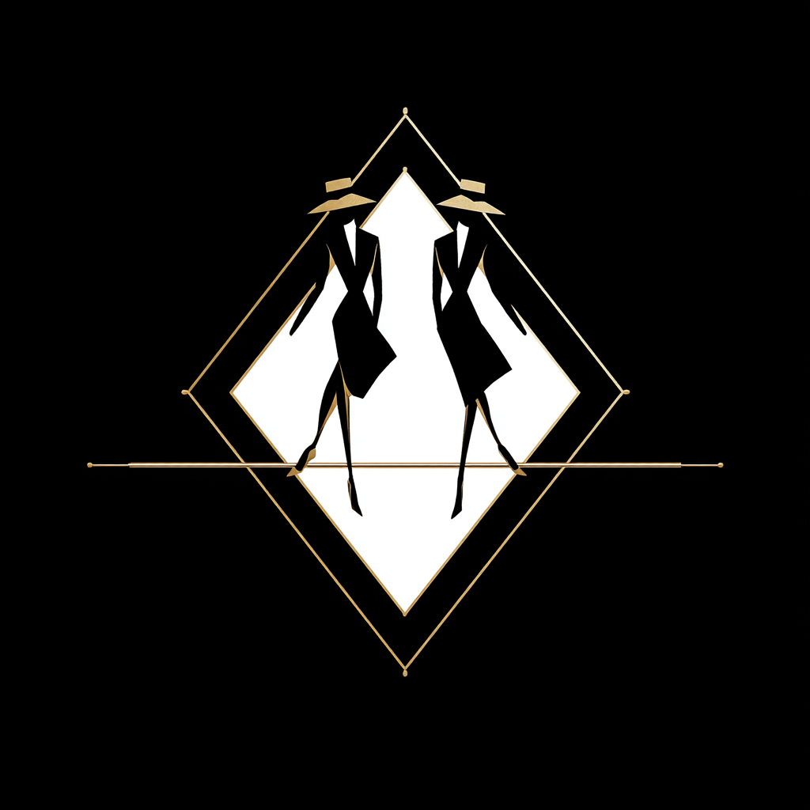

Getting Started
From zero to a running visualization in five minutes.
Prerequisites
You need three tools:
| Tool | Purpose | Install |
|---|---|---|
| Node.js | JavaScript runtime (v18+) | brew install node or nodejs.org |
| PureScript | Compiler | npm install -g purescript |
| Spago | Build tool and package manager | npm install -g spago |
Verify your setup:
purs --version # 0.15.x
spago --version # 0.93.x or later
node --version # v18+Try a Demo
The fastest way to see Hylograph in action is to browse the demos online, or clone the demos repo and build them locally:
The Hylographic Fold (recommended first)
A seven-chapter interactive guide to how Hylograph works: view online, or build locally:
git clone https://github.com/afcondon/purescript-hylograph-demos.git
cd purescript-hylograph-demos
spago build
spago bundle -p hylograph-demo-selection
# Open selection/public/index.html in your browserAll demos
Build everything with make all. Eight demos covering graph algorithms, layout, music, simulation, and more — see the full list.
Libraries
| Package | Description | |
|---|---|---|
| hylograph-selection | Core: HATS tree construction, interpreters (SVG, English, Mermaid, MetaHATS), scales, color schemes, coordinated highlighting, zoom, brush, pointer events. | demo |
| hylograph-simulation | Force simulation — n-body, collision, link forces, centering. | demo |
| hylograph-simulation-halogen | Halogen component wrapper for force simulations with tick-driven rendering. | |
| hylograph-layout | Layout algorithms — tree layouts, edge bundling, Sankey diagrams, treemaps, beeswarm. | demo |
| hylograph-graph | Graph data structures — adjacency lists, traversals, connected components, topological sort. | demo |
| hylograph-music | Proof of concept: data to sound. Same fold, different output. | demo |
| hylograph-canvas | Canvas rendering backend for high-performance visualizations. | |
| hylograph-optics | Optics (lenses, prisms) for traversing and transforming HATS trees. | |
| hylograph-transitions | Transition and animation engine for smooth visual updates. | |
| sigil | Typographic rendering for PureScript type signatures (HTML + SVG). | demo |
| sigil-hats | Bridge from Sigil layout trees to HATS for declarative composition. | demo |
All packages are published to the PureScript Registry. Install any of them with
spago install hylograph-selection (or whichever package you need).
Your First Visualization
Create a new project and add hylograph-selection:
spago init
spago install hylograph-selectionIn src/Main.purs:
module Main where
import Prelude
import Effect (Effect)
import Hylograph.HATS (Tree, elem, forEach, staticStr)
import Hylograph.HATS.Friendly as F
import Hylograph.HATS.InterpreterTick (rerender)
import Hylograph.Internal.Element.Types (ElementType(..))
myViz :: Tree
myViz =
elem SVG [ F.viewBox 0.0 0.0 400.0 200.0, F.width 400.0, F.height 200.0 ]
[ forEach "dots" Circle
[ { x: 80.0, label: "A" }
, { x: 200.0, label: "B" }
, { x: 320.0, label: "C" }
]
_.label
\d ->
elem Circle
[ F.cx d.x, F.cy 100.0, F.r 30.0
, F.fill "#2563eb"
, staticStr "textContent" d.label
] []
]
main :: Effect Unit
main = void $ rerender "#app" myVizCreate an index.html with a <div id="app"></div>, bundle with spago bundle, and open it in a browser. Three blue circles.
From here, explore the interactive demo to understand how folds, composition, and interpreters work together.